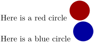
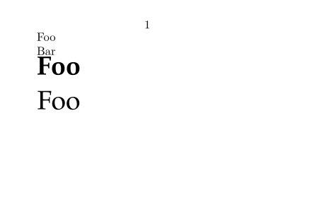
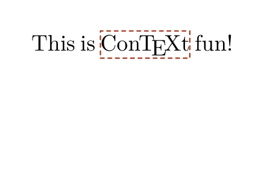
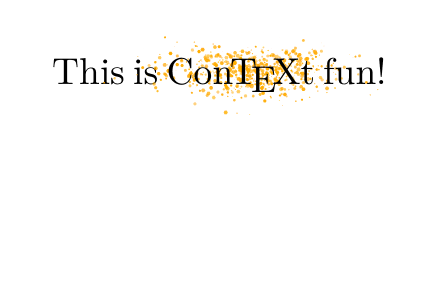
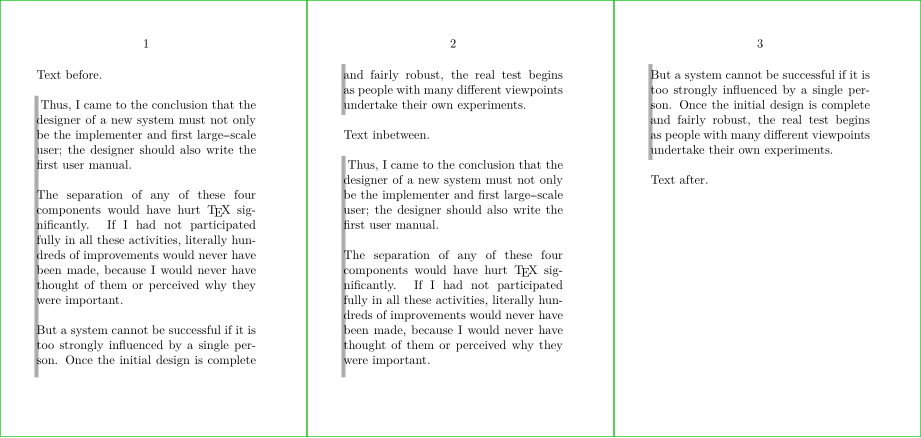
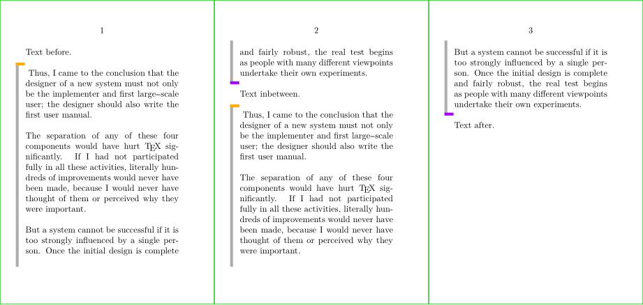
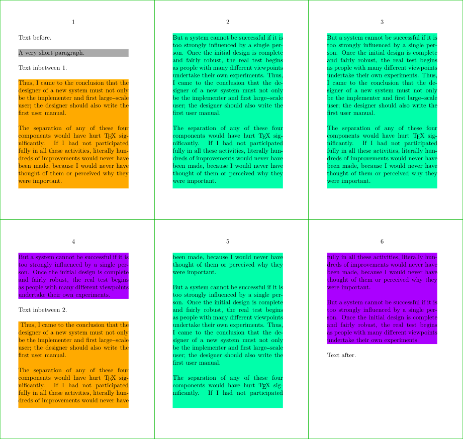
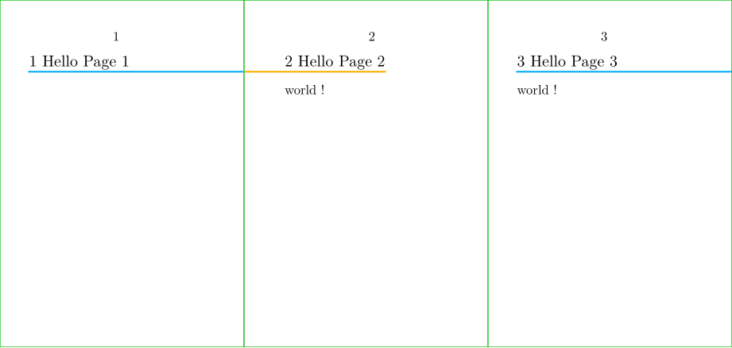
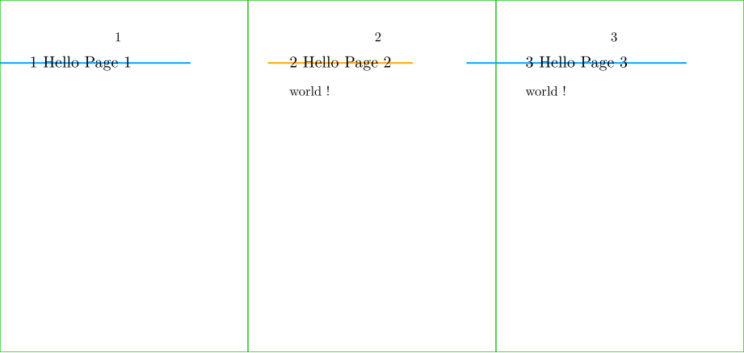
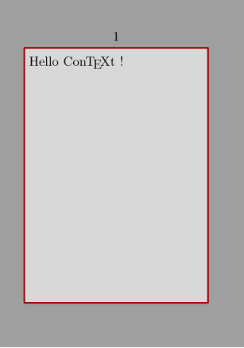

Contents
Introduction
MetaPost is a graphical programming language, based on Donald Knuth's MetaFont.
MetaPost is ConTeXt's native graphics language. MetaFun is a MetaPost module by Hans Hagen that adds a lot of extra features; it is enabled by default, so one could say that MetaFun is ConTeXt's default dialect of MetaPost.
Using MetaPost in ConTeXt
MetaPost can be directly inserted anywhere with \startMPcode.
-
\def\mycolor{.625red} Here is a red circle \startMPcode fill fullcircle scaled 20pt withcolor \mycolor; \stopMPcode
With \startuseMPgraphic you can also you define a piece of graphics code that is processed anew every time the graphic is placed with \useMPgraphic.
-
\startuseMPgraphic{name} fill fullcircle scaled 20pt withcolor \mycolor; \stopuseMPgraphic \def\mycolor{.625red} Here is a red circle \useMPgraphic{name} \def\mycolor{.625blue} Here is a blue circle \useMPgraphic{name}
- 
Commonly used commands
- reusableMPgraphic
- For graphics that are the same every time, it is better to use \startreusableMPgraphic : the graphic is compiled only once , and the one resulting picture can be placed at various points with \reuseMPgraphic .
- uniqueMPgraphic
- dynamic graphics that are recompiled when parameters change (width, height, depth, background color, line color) ( \startuniqueMPgraphic , \uniqueMPgraphic ).
- staticMPfigure
- The \startuseMPgraphic series of commands were designed for using MetaPost for drawing fancy frames and backgrounds and not for using stand-alone graphics for a document. \startstaticMPfigure creates a separate pdf file containing the graphic. This pdf can be included in the document using \usestaticMPfigure . ConTeXt is clever enough to recompile the resulting MetaPost file only if something inside the \startstaticMPfigure has changed.
- MPinclusions
- Inside, one can specify MetaPost files to input , and also define MetaPost functions ( \startMPinclusions )
- MPinstance
- used to set up MetaPost invocations with particular features. One use case could be to select a sans serif font for all MetaPost labels ( \defineMPinstance , \setupMPinstance ).
- MPpage
- produces a page a containing MetaPost graphic. The page is just large enough to contain the graphic. The resulting pdf is self-contained (it has all the fonts embedded). This is useful if you want to send the figure to a coauthor or a journal ( \startMPpage ).
Testing plain MetaPost or mtxrun
To test whether MetaPost is installed on your system, create a file called test.mp:
beginfig(1) fill fullcircle scaled 3cm withcolor red ; endfig ; end ;
apply MetaPost on the test file
mpost test.mp
That should create a postscript file test.1. Open test.1 with a postscript viewer like Ghostview, Okular, … You should see a red disk. To generate a pdf named test.1:
mptopdf test.mp
With a working ConTeXt distribution you should be able to get a pdf with
mtxrun --script metapost test.mp
Text in MetaPost
Text that is typeset using textext or btex … etex adapts to the body font. However, when label("Foo", pair) or "Foo" infont defaultfont is used, which is not the recommended way, the text is typeset using the font MetafunDefault, which can be changed if desired. Example:
-
\setuppapersize[A8,landscape] \starttext \startMPcode label("Foo", origin); draw textext("Bar") yshifted -LineHeight; \stopMPcode \definefontsynonym [MetafunDefault] [Bold*default] \switchtobodyfont [pagella, 18pt] \startMPcode label("Foo", origin); draw textext("Foo") yshifted -LineHeight; \stopMPcode \stoptext
Gives:
- 
The recommended way to typeset text is to use the textext macro and change the font using \defineMPinstance or \setupMPinstance (<-- see for example).
Color
Color in MetaPost describes how to get color mixtures, TeX colors, and transparent effects in MetaPost graphics.
Overlays
Sooner or later you will want to play with \framed \startuseMPgraphic (and MP family's commands) and \defineoverlay.
Let's start with an quick one.
-
\setuppapersize[A8,landscape] \setupheadertexts[] \setupbodyfont[18pt] \definecolor [lineColor] [h=a53a27] \startuseMPgraphic{lineMP} numeric w, h; w := OverlayWidth ; h := OverlayHeight ; draw ((0,0) -- (w,0) -- (w,h) -- (0,h) -- cycle) withpen pencircle scaled (h/20) withcolor \MPcolor{lineColor} dashed evenly ; \stopuseMPgraphic \defineoverlay [lineOL] [\useMPgraphic{lineMP}] \defineframed [lined] [background=lineOL, frame=off, offset=0pt, rulethickness=0pt] \starttext This is \lined{\ConTeXt} fun! \stoptext
- 
But then, we can have fun with MetaPost
-
\setuppapersize[A8,landscape] \setupheadertexts[] \setupbodyfont[18pt] \definecolor [bubbleColor] [h=ffaa00] \startuseMPgraphic{bubbleMP} numeric w, h; w := OverlayWidth ; h := OverlayHeight ; for i=1 upto 750 : draw ( (normaldeviate+0.5)*w/3.5, (normaldeviate+0.5)*h/3.5) withpen pencircle scaled ((abs(uniformdeviate 1))*(h/10)) withcolor \MPcolor{bubbleColor} withtransparency (1,0.5 + (uniformdeviate 0.5)) ; endfor ; \stopuseMPgraphic \defineoverlay [bubbleOL] [\useMPgraphic{bubbleMP}] \defineframed [bubbled] [background=bubbleOL, frame=off, offset=0pt, rulethickness=0pt] \starttext This is \bubbled{\ConTeXt} fun! \stoptext
- 
Multipage text and nofmultipars
The basic :
-
\definepapersize[sheet][width=156mm, height=74mm] \setuppapersize [A8] [sheet] \setupbodyfont[6pt] \setuppaper[nx=3,ny=1] \setuparranging[XY] \showframe[edge] \setupalign[tolerant] \setupwhitespace[line] \definecolor [lineColor] [h=aaaaaa] \startuseMPgraphic{MPtextframe} begingroup; for i=1 upto nofmultipars : % HERE! for each block draw ( (ulcorner multipars[i]) -- % Upper Left corner (llcorner multipars[i]) ) % Lower Left corner withcolor \MPcolor{lineColor} withpen pensquare scaled 2pt; endfor ; endgroup; \stopuseMPgraphic \definetextbackground [TextFrame] [mp=MPtextframe, location=paragraph] \starttext Text before. \starttextbackground[TextFrame]\ \input knuth \stoptextbackground Text inbetween. \starttextbackground[TextFrame]\ \input knuth \stoptextbackground Text after. \stoptext
- 
Then, you can play with it:
-
\definepapersize[sheet][width=156mm, height=74mm] \setuppapersize [A8] [sheet] \setupbodyfont[6pt] \setuppaper[nx=3,ny=1] \setuparranging[XY] \showframe[edge] \setupalign[tolerant] \setupwhitespace[line] \definecolor [lineColorStart] [h=ffaa00] \definecolor [lineColor] [h=aaaaaa] \definecolor [lineColorEnd] [h=aa00ff] \startuseMPgraphic{textframe} begingroup; for i=1 upto nofmultipars : draw ( (ulcorner multipars[i] shifted (-2mm, +1mm)) -- (llcorner multipars[i] shifted (-2mm, -1mm)) ) withcolor \MPcolor{lineColor} withpen pensquare scaled 2pt; if multilocs[i] == 1: % HERE 1 = first block draw ( (ulcorner multipars[i] shifted (-2mm, +1mm)) -- (ulcorner multipars[i] shifted (-0.5mm, +1mm)) ) withcolor \MPcolor{lineColorStart} withpen pensquare scaled 2pt; fi; if multilocs[i] == 3: % HERE 3 = last block draw ( (llcorner multipars[i] shifted (-2mm, -1mm)) -- (llcorner multipars[i] shifted (-0.5mm, -1mm)) ) withcolor \MPcolor{lineColorEnd} withpen pensquare scaled 2pt; fi; % if one_piece_multi_par : is also available endfor ; endgroup; \stopuseMPgraphic \definetextbackground [TextFrame] [mp=textframe, location=paragraph] \starttext Text before. \starttextbackground[TextFrame]\ \input knuth \stoptextbackground Text inbetween. \starttextbackground[TextFrame]\ \input knuth \stoptextbackground Text after. \stoptext
- 
Intermediate parts can be identified with (multilocs[i] == 3:).
Actually, with LMTX it's even clearer using multikind equal to "single" or "first" or "middle" or "last":
-
\definepapersize[sheet][width=156mm, height=148mm] \setuppapersize [A8] [sheet] \setupbodyfont[6pt] \setuppaper[nx=3,ny=2] \setuparranging[XY] \showframe[edge] \setupalign[tolerant] \setupwhitespace[line] \definecolor [FillColorA] [h=aaaaaa] \definecolor [FillColorB] [h=ffaa00] \definecolor [FillColorC] [h=00ffaa] \definecolor [FillColorD] [h=aa00ff] \startuseMPgraphic{textframe} begingroup; for i=1 upto nofmultipars : if multikind[i] == "single": fill multipars[i] withcolor \MPcolor{FillColorA}; elseif multikind[i] == "first": fill multipars[i] withcolor \MPcolor{FillColorB}; elseif multikind[i] == "middle": fill multipars[i] withcolor \MPcolor{FillColorC}; elseif multikind[i] == "last": fill multipars[i] withcolor \MPcolor{FillColorD}; fi; endfor ; endgroup; \stopuseMPgraphic \definetextbackground [TextFrame] [mp=textframe, location=paragraph] \starttext Text before. \starttextbackground[TextFrame] A very short paragraph. \stoptextbackground Text inbetween 1. \starttextbackground[TextFrame] \input knuth \input knuth \input knuth \stoptextbackground Text inbetween 2. \starttextbackground[TextFrame]\ \input knuth \input knuth \stoptextbackground Text after. \stoptext
- 
Example of section headline with underlining touching the outer edge of the page
Remark the use of:
-
OnRightPageto test if we are on a Right page-
remark:
CurrentColumnalso exists.
-
remark:
-
OverlayBoxto get the path corresponding to the OverlayBox -
llcornerto access to lower left corner of the path, andlrcorner -
rightenlargedandleftenlarged -
CutSpace,TextWidthto access tjhe associated layout's dimensions -
bbwidth, to get the width of the path given in parameter -
setbounds … to …, to set the bounding box (if not, the MetaPost figure, which is just an horizontal line, will be align with the center of the OverlayBox, see the demo after).
-
% Specific to wiki settings \definepapersize[sheet][width=156mm,height=74mm] % A8: 52 x 74 \setuppapersize[A8][sheet] \setuppaper[nx=3,ny=1] \setuparranging[XY] \showframe[edge] \setupbodyfont[8pt] % Demo starts here \setuppagenumbering[alternative=doublesided] \definecolor [LeftColor] [h=ffaa00] \definecolor [RightColor] [h=00aaff] % MetaPost \startuseMPgraphic{MPMyFrame} if OnRightPage: draw (llcorner (OverlayBox)) -- (lrcorner (OverlayBox rightenlarged (TextWidth - (bbwidth OverlayBox) + CutSpace))) withpen pensquare scaled 1pt withcolor \MPcolor{RightColor}; else: draw (llcorner (OverlayBox leftenlarged CutSpace)) -- (lrcorner (OverlayBox)) withpen pensquare scaled 1pt withcolor \MPcolor{LeftColor}; fi; setbounds currentpicture to OverlayBox; \stopuseMPgraphic % Use Metapost within an Overlay \defineoverlay [OLMyFrame] [\useMPgraphic{MPMyFrame}] % Use the Overlay for a framed environment \defineframed [MyFrame] [background=OLMyFrame, frame=off, offset=0pt, rulethickness=0pt] % Use the framed environment within an headline command \define[2]\MySection{% \MyFrame{#1 #2}} % Use the headline command within a section setup \setuphead [section] [command=\MySection] \starttext \startsection[title=Hello Page 1] \stopsection \page \startsection[title=Hello Page 2] world ! \stopsection \page \startsection[title=Hello Page 3] world ! \stopsection \stoptext
- 
If you forget to setup the bounding box of the MetaPost figure with setbounds:
-
% Specific to wiki settings \definepapersize[sheet][width=156mm,height=74mm] % A8: 52 x 74 \setuppapersize[A8][sheet] \setuppaper[nx=3,ny=1] \setuparranging[XY] \showframe[edge] \setupbodyfont[8pt] % Demo starts here \setuppagenumbering[alternative=doublesided] \definecolor [LeftColor] [h=ffaa00] \definecolor [RightColor] [h=00aaff] % MetaPost \startuseMPgraphic{MPMyFrame} if OnRightPage: draw (llcorner (OverlayBox)) -- (lrcorner (OverlayBox rightenlarged (TextWidth - (bbwidth OverlayBox) + CutSpace))) withpen pensquare scaled 1pt withcolor \MPcolor{RightColor}; else: draw (llcorner (OverlayBox leftenlarged CutSpace)) -- (lrcorner (OverlayBox)) withpen pensquare scaled 1pt withcolor \MPcolor{LeftColor}; fi; % setbounds currentpicture to OverlayBox; % <<<<<<<<< INSERTED MISTAKE HERE <<<<<<<<< \stopuseMPgraphic % Use Metapost within an Overlay \defineoverlay [OLMyFrame] [\useMPgraphic{MPMyFrame}] % Use the Overlay for a framed environment \defineframed [MyFrame] [background=OLMyFrame, frame=off, offset=0pt, rulethickness=0pt] % Use the framed environment within an headline command \define[2]\MySection{% \MyFrame{#1 #2}} % Use the headline command within a section setup \setuphead [section] [command=\MySection] \starttext \startsection[title=Hello Page 1] \stopsection \page \startsection[title=Hello Page 2] world ! \stopsection \page \startsection[title=Hello Page 3] world ! \stopsection \stoptext
- 
Example for page background
Remark the use of:
-
Field[…][…]to get the path corresponding to the layout area -
StartPageandStopPage - \setupbackgrounds
-
\setuppapersize[A8] \startuseMPgraphic{MPMyPage} StartPage ; path Main ; Main := Field[Text][Text] enlarged 1mm; pickup pencircle scaled 1pt ; fill Page withcolor .625white ; fill Main withcolor .850white ; draw Main withcolor .625red ; StopPage ; \stopuseMPgraphic \defineoverlay [OLMyPage] [\useMPgraphic{MPMyPage}] \setupbackgrounds [page] [background=OLMyPage] \starttext Hello \ConTeXt\ ! \stoptext
- 
MetaPost documentation
Official
Introductions and guides
-
Drawing with Metapost
from Toby Thurston (2024)
- This project provides a document that discusses how to draw technical diagrams with John Hobby's Metapost language. It includes over 200 illustrations created with Metapost, complete with source code as inspiration and examples. The intended level is for intermediate to advanced users rather than complete beginners.
- MetaPost examples catalogue from association GUTenberg
- MetaPost a manual , on Syracuse a French User Group
- A Beginner's Guide to METAPOST for Creating High-Quality Graphics by Troy Henderson (2006)
-
Learning METAPOST by doing
, from André Heck (2005), and
solutions
.
- mirror .
- Une introduction à MetaPost Laurent Chéno, May 1999, also here .
ConTeXt meetings
- MetaPost news (2024)
- Metapost control structures (conditions and loops) September 12–18, 2022
- MetaPost pictures (with colors) September 12–18, 2022
- Metapost paths and pairs (and pens and transforms) September 21, 2021
- MetaPost for Beginners Hartmut Henkel, August 2008, try to remove Showstoppers for beginners.
Older content
- MakeMPY : create MetaPost outlines (by Pragma)
- MPtoPDF : create PDF from MetaPost (by Pragma)
- a few examples of MetaPost graphics
- Puzzling graphics in MetaPost (article)
- metapost metafun. Hans Hagen at MAPS